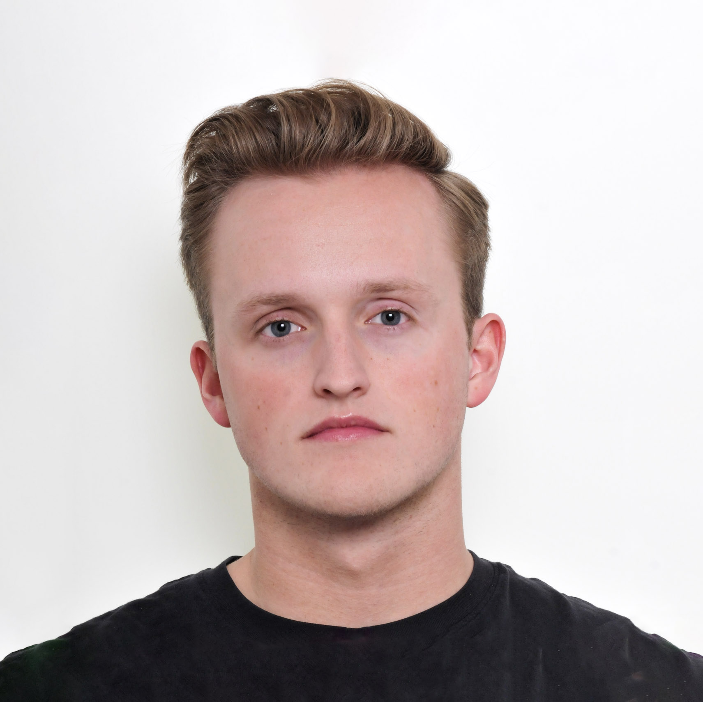

Tungsten
Investigating the materials and processing challenges that currently limit additive manufacturing of tungsten alloys for extreme environments.
Ph.D. student · UC Berkeley

Investigating the materials and processing challenges that currently limit additive manufacturing of tungsten alloys for extreme environments.
Researching how processing conditions affect microstructure and mechanical performance in additively manufactured stainless steels and titanium alloys.
Irradiation effects in materials used in fusion systems (tungsten, superconducting magnets).
Journal of Applied Physics 137, 235101.
TMS 2025 Annual Meeting & Exhibition.
University of California, Berkeley
Ph.D. in Nuclear Engineering, 2023–present
M.Eng. in Nuclear Engineering, 2023
University of Utah
Honors B.S. in Mechanical Engineering, 2022
Nuclear Science and Security Consortium Graduate Fellow. Research conducted with UC Berkeley and Lawrence Livermore National Laboratory.
Reachable via: